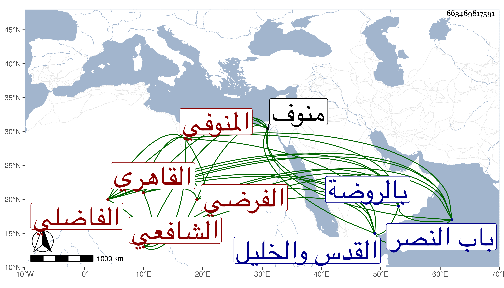

0902Sakhawi.DawLamic.ITO20230111-ara1.EIS1600.863489817591
Biography ID: 863489817591
403
محمد بن علي بن أحمد الشمس بن النور بن الشهاب المنوفي ثم القاهري الفاضلي الشافعي الفرضي ويعرف بابن مسعود . ولد تقريبا سنة عشرين وثمانمائة بمنوف ونشأ بها فحفظ القرآن وكتبا منها المنهاج وأخذ الفقه عن العلاء القلقشندي والعلم البلقيني والطبقة والفرائض عن البوتيجي وأبي الجود ونحوهما وسمع على شيخنا وغيره وهو ممن سمع في البخاري بالظاهرية القديمة ولازم بأخرة الجلال البكري في دروسه وكذا أبا السعادات البلقيني في آخرين وقصدني مرة للاستفتاء في حديث نازعه بعضهم فيه وأغلظ عليه فنصرته . وكان ساكنا خيرا ذا فضيلة في الفرائض والحساب أقرأ فيهما الطلبة . وناب في القضاء عن العلم البلقيني فمن بعده وجلس بحانوت بالقرب من وكالة قوصون ولكنه لم يتهالك على ذلك بل كان جل استرزاقه من الشهادة ومن جهات خفيفة كالتصوف بسعيد السعداء والإمامة بالفاضلية مع طلب فيها بل وقطنها . وحج وزار في صغره القدس والخليل وكان ضعيف البصر . مات في ليلة الأربعاء ثامن ربيع الأول سنة ثمان وثمانين وصلي عليه من الغد ودفن بالروضة خارج باب النصر رحمه الله .
